第一章 丰富的图形世界单元测试·培优卷
【北师大版2024】
参考答案与试题解析
第Ⅰ卷
一．选择题（共10小题，满分30分，每小题3分）
1．（3分）（24-25七年级上·广东深圳·期中）下列图形中，属于棱柱的有（ ）

A．2个 B．3个 C．4个 D．5个
【答案】C
【分析】本题考查了棱柱的定义，熟练掌握定义是解题的关键．根据棱柱的特点：上下两个面大小，形状完全相同，侧棱都相等，侧面都是平行四边形去判断．
【详解】解：根据题意，图中的第1个，第2个，第6个，第7个都是棱柱，共有4个棱柱，
故选：C．
2．（3分）（24-25六年级上·山东威海·期末）下列说法不正确的是（ ）
A．长方体是四棱柱；
B．八棱柱有16条棱；
C．五棱柱有7个面；
D．直棱柱的每个侧面都是长方形．
【答案】B
【分析】此题主要考查了认识立体图形，关键是认识常见的立体图形，掌握棱柱的特点．根据棱柱的特点可得答案．
【详解】解：A、长方体是四棱柱，选项说法正确，不符合题意；
B、八棱柱有8×3=24条棱，选项说法错误，符合题意；
C、五棱柱有7个面，选项说法正确，不符合题意；
D、直棱柱的每个侧面都是长方形，选项说法正确，不符合题意；
故选：B．
3．（3分）（24-25六年级上·山东泰安·期末）如图所示的几何体从左面看到的形状图是（ ）

A．
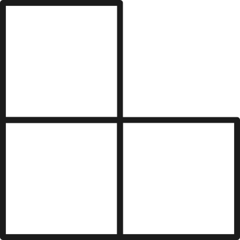
B． C．
C． D．
D．
【答案】A
【分析】本题主要从不同方向看几何体，熟练掌握几何体的特征是解题的关键；因此此题可根据几何体的特征进行求解．
【详解】
解：由图可知从左面看到的形状图是
故选A．
4．（3分）（24-25七年级上·贵州毕节·期中）如图，用一个平面去截一个三棱柱，截面的形状不可能是（ ）
A．三角形 B．四边形 C．五边形 D．六边形
【答案】D
【分析】本题考查了截一个几何体，熟练掌握三棱柱的截面形状是解题的关键．根据三棱柱的截面形状判断即可．
【详解】解：用一个平面去截一个三棱柱，截面的形状可能是：三角形，四边形，五边形，
不可能是六边形．
故选：D．
5．（3分）（24-25七年级上·四川成都·期中）在图中增加1个大小相同的正方形，使所得的新图形经过折叠能够围成一个正方体，那么有（ ）种不同的添加方法
A．2 B．3 C．4 D．5
【答案】C
【分析】本题考查了展开图折叠成几何体，结合正方体的平面展开图的特征，只要折叠后能围成正方体即可．
【详解】解：如图所示，在标有1、2、3、4的位置增加1个大小相同的正方形，能使所得的新图形经过折叠能够围成一个正方体，
所以有4种不同的添加方法．
故选: C．
6．（3分）（24-25七年级上·江苏苏州·专题练习）如图几何体中可以由平面图形绕某条直线旋转一周得到的是（ ）
A． B．
C． D．
【答案】B
【分析】根据平面图形绕某条直线旋转一周得到的几何体必须有曲面，逐一判断即可解答．
考查了平面图形旋转形成几何体，熟练掌握几何体的生成方式是解题的关键．
【详解】解：∵平面图形绕某条直线旋转一周得到的几何体必须有曲面，
∴B选项符合题意；
故选：B．
7．（3分）（24-25七年级上·广东深圳·期中）如图所示的长方形（长为7，宽为4）硬纸板，剪掉阴影部分后，将剩余的部分沿虚线折叠，制作成底面为正方形的长方体箱子，则长方体箱子的体积为（ ）
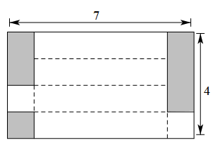
A．22 B．5 C．7 D．11
【答案】B
【分析】利用图形求出长方体的宽及长即可．
【详解】解：∵长方体的底面为正方形，由图可知底面周长等于长方形纸板的宽，
∴正方形的边长为1，箱子的长为7−1×2=5，
长方体的体积为：5×1×1=5
故选B．
【点睛】本题主要考查长方体体积的计算方法，熟练根据图求出长宽高是解题关键．
8．（3分）（24-25六年级下·上海·开学考试）把一个长8厘米、宽6厘米、高4厘米的长方体截成两个长方体后，这两个长方体的表面积之和比原长方体增加了（ ）平方厘米．
A．96 B．48
C．64 D．以上三种都有可能
【答案】D
【分析】本题考查长方体的切割．通过不同的切割方式确定切面长方形的长和宽是解题的关键．求出切面的表面积进行比较即可．
【详解】解：如图，
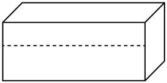
按照上图虚线截成两个长方体后，这两个长方体的表面积之和比原长方体增加了8×6×2=96平方厘米；
如图，
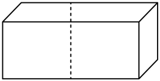
按照上图虚线截成两个长方体后，这两个长方体的表面积之和比原长方体增加了4×6×2=48平方厘米；
如图，
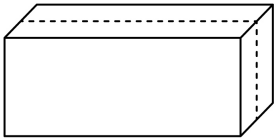
按照上图虚线截成两个长方体后，这两个长方体的表面积之和比原长方体增加了4×8×2=64平方厘米；
∴以上三种都有可能；
故选：D
9．（3分）（2025·河南焦作·二模）如图是正方体表面展开图．将其折叠成正方体后，距顶点P最远的点是（ ）
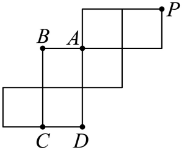
A．点A B．点B C．点C D．点D
【答案】A
【分析】本题考查了平面图形和立体图形，把图形围成立体图形求解．
【详解】解：把图形围成立方体如图所示：
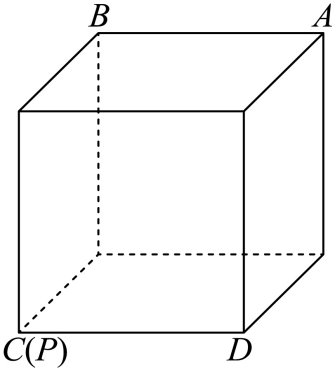
所以与顶点P距离最远的顶点是A，
故选：A．
10．（3分）（24-25七年级上·江苏苏州·专题练习）变式1，用大小相同的小正方体搭一个几何体，从正面看和从上面看所得的图形如图所示，这样的几何体最少需要小正方体的个数为（ ）
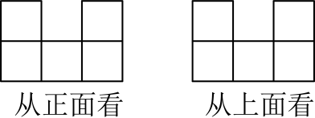
A．5 B．6 C．7 D．8
【答案】C
【分析】本题考查了学生对三视图的掌握程度和灵活运用能力、空间想象能力，灵活运用三视图的能力和空间想象能力是解答本题的关键．
从上面可以看出最底层小正方形的个数及形状，从正面可以看出第1列和第3列都有2个小正方体，从而可以算出最少需要小正方体的个数．
【详解】解：由从上面看到的形状可得最底层有5个小正方体，
由从正面看到的形状可得第1列和第3列都有2个小正方体，
那么最少需要5+2=7个小正方体，
故选：C．
二．填空题（共6小题，满分18分，每小题3分）
11．（3分）（24-25七年级·江苏南京·专题练习）棱柱可以分为 和 ．直棱柱的侧面是 ．
【答案】 直棱柱 斜棱柱 长方形
【分析】棱柱可以分为直棱柱和斜棱柱，直棱柱的每个侧面都是长方形，据此回答．
【详解】解：棱柱可以分为直棱柱和斜棱柱，直棱柱的侧面是长方形．
故答案为：直棱柱；斜棱柱；长方形．
【点睛】本题考查棱柱的分类和特征，棱柱的各个侧面都是平行四边形，所有的侧棱都平行且相等；直棱柱的各个侧面都是长方形．
12．（3分）（24-25七年级上·河南郑州·期末）某几何体的一个截面是三角形，则这个几何体可能是 ．（写一个即可）
【答案】三棱柱（答案不唯一）
【分析】本题考查截一个几何体，掌握正方体，圆锥、棱柱的截面的形状是正确解答的关键．根据正方体，圆锥、棱柱的截面的形状进行判断即可．
【详解】解：某几何体的一个截面是三角形，则这个几何体可能是正方体、三棱柱、圆锥，
故答案为：三棱柱（答案不唯一）．
13．（3分）（24-25七年级上·宁夏银川·期末）银川承天寺塔（如图），始建于西夏天佑垂圣元年（公元1050年），是宁夏现存古塔中最高的一座砖塔．它是一座八角十一层楼阁式砖塔，它可以近似地看作由十一个八棱柱构成．请问：一个八棱柱一共有 角 条棱， 有 面， 有 个顶点．

【答案】 16 24 10 16
【分析】本题考查立体几何的知识，解题的关键是掌握八棱柱的立体图形，根据图形，进行解答，即可．
【详解】解：八棱柱是一个有8个侧面的棱柱，每个侧面都是矩形，有两个底面，每个底面都是都是一个八边形，每个底面有8个顶点；每个底面有8条棱，每个底面的顶点都于另一个底面对应的顶点相连；
∴八棱柱有16个角；有3×8=24条棱；有10个面；有8×2=16个顶点；
故答案为：16；24；10；16．
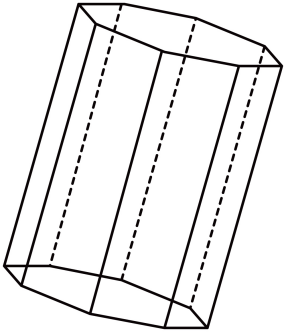
14．（3分）（24-25七年级上·福建宁德·期中）“点亮青春梦想”六个字分别书写在正方体的六个面上，如图是它的一种展开图，那么在原正方体中，与“青”字所在面相对的面上的汉字是 ．

【答案】梦
【分析】此题考查正方体相对面上的字，根据正方体相对面之间间隔一个正方形解答即可．
【详解】解：由正方体展开图的特点可知，“点”与“春”相对，“亮”与“想”相对，“青”与“梦”相对，
故答案为：梦．
15．（3分）（24-25七年级上·江苏南京·专题练习）下列各硬纸片分别沿虚线折叠，得不到长方体纸盒的是 ．（请填写序号）

【答案】③④
【分析】此题考查了展开图折叠成长方体，通过结合立体图形与平面图形的相互转化，去理解和掌握几何体的展开图，要注意多从实物出发，然后再从给定的图形中辨认它们能否折叠成给定的立体图形．
由平面图形的折叠及展开图解题．
【详解】解∶①和②可以折叠成，③和④有重叠的面不可以折成，
故答案为：③④．
16．（3分）（24-25六年级上·山东威海·期末）如图1是边长为1的六个小正方形组成的图形，它可以围成图2的正方体，则图1中小正方形的顶点A、B在图2围成的小正方体上的距离是 ．

【答案】1
【分析】本题考查了展开图折成几何体，判断出A、B两点在正方体上的位置是解题关键．由展开图折叠成几何体可知，正方体上的顶点A、B是同一棱上的两个端点，据此即可得到答案．
【详解】解：由展开图折叠成几何体可知，正方体上的顶点A、B是同一棱上的两个端点，
即A、B的距离是正方体的棱长1，
故答案为：1．
第Ⅱ卷
三．解答题（共8小题，满分72分）
17．（6分）（24-25七年级上·江苏无锡·单元测试）将下列几何体按名称分类：

柱体有______；
锥体有______；
球体有______．（请填写序号）
【答案】（1）（2）（3），（5），（4）
【分析】本题主要了立体图形的分类，理解立体图形的分类是解答关键．根据柱体、锥体、球体进行分类求解．
【详解】解：根据图形可知
柱体分为圆柱和棱柱，所以柱体有（1）（2）（3）；
锥体包括棱锥与圆锥，所以锥体有（5）
球体属于单独的一类，球有（4）．
故答案为：（1）（2）（3），（5），（4）．
18．（6分）（24-25七年级上·江苏无锡·阶段练习）飞机表演“飞机拉线”时，我们用数学的知识可解释为点动成线.用数学知识解释下列现象：
(1)流星从空中划过留下的痕迹可解释为______；
(2)自行车的辐条运动可解释为_____；
(3)一只蚂蚁行走的路线可解释为_____；
(4)打开折扇得到扇面可解释为_____；
(5)一个圆面沿着它的一条直径旋转一周成球可解释为____.
【答案】(1)点动成线；
(2)线动成面；
(3)点动成线；
(4)线动成面；
(5)面动成体．
【分析】根据点线面体之间的关系为：点动成线，线动成面，面动成体的规律来解答即可．
【详解】（1）解：流行是点，光线是线，流星划出一条长线，所以流星从空中划过留下的痕迹可解释为点动成线；
（2）解：自行车的辐条是线，在运动过程中形成面，所以自行车的辐条运动可解释为线动成面；
（3）解：蚂蚁可看做是点，行走的路线是线，所以一只蚂蚁行走的路线可解释为点动成线；
（4）解：折扇合起来时是一条线，打开折扇得到扇面可解释为线动成面；
（5）解：一个圆是面，球是立体图形，一个圆面沿着它的一条直径旋转一周成球可解释为面动成体.
【点睛】此题主要考查了点、线、面、体，关键是掌握四者之间的关系．
19．（8分）（24-25六年级上·山东淄博·期中）如图所示为一个棱柱形状的食品包装盒的展开图．

(1)这个食品包装盒的几何体名称是________；
(2)根据图中所给数据，求这个食品包装盒的侧面积．
【答案】(1)五棱柱
(2)230cm2
【分析】本题考查了几何体的展开图，解决本题的关键是熟悉由平面图形的折叠及常见立体图形的展开图．
（1）由平面图形的折叠及常见立体图形的展开图，即可解答；
（2）侧面积为5个长方形的面积之和，即可解答．
【详解】（1）解：这个包装盒为五棱柱；
（2）解：S侧=10×7+2+5+3+6=230cm2．
20．（8分）（24-25七年级上·江苏无锡·专题练习）我们知道，三棱柱的上、下底面都是三角形，那么正三棱柱的上、下底面都是等边三角形．如图，大正三棱柱的底面周长为10，截取一个底面周长为3的小正三棱柱．
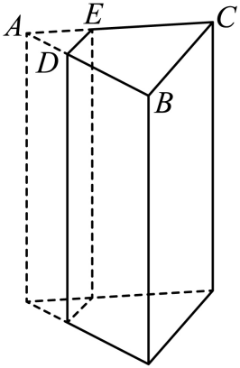
(1)请写出截面的形状；
(2)请直接写出四边形DECB的周长．
【答案】(1)长方形
(2)9
【分析】（1）依据大正三棱柱的底面周长为10，截取一个底面周长为3的小正三棱柱，即可得到截面的形状；
（2）依据△ADE是周长为3的等边三角形，△ABC是周长为10的等边三角形，即可得到四边形DECB的周长．
【详解】（1）由题可得，截面的形状为长方形．
（2）∵△ADE是周长为3的等边三角形，
∴DE＝AD＝1，
又∵△ABC是周长为10的等边三角形，
∴AB＝AC＝BC＝103，
∴DB＝EC＝103−1＝73，
∴四边形DECB的周长＝1＋73×2＋103＝9．
【点睛】本题考查了正三棱柱的截面，底面周长的计算，正确理解正三棱柱的截面是解题的关键．
21．（10分）（24-25七年级上·山东威海·期末）如图所示的几何体，由五个大小相同的小正方体搭成．
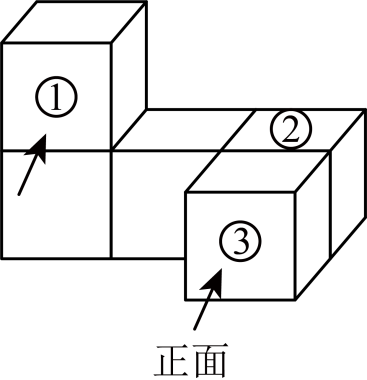
(1)分别画出从正面，左面和上面看到的该几何体的形状图；
(2)当去掉一个小正方体_______时，剩余部分从左面看形状没有改变（填写图中小正方体的序号）．
【答案】(1)图见解析
(2)②
【分析】本题考查从不同方形看几何体：
（1）分别画出从前面，左面和上面看到的图形即可；
（2）根据从左面看的形状不变，进行判断即可．
【详解】（1）解：由题意，作图如下：
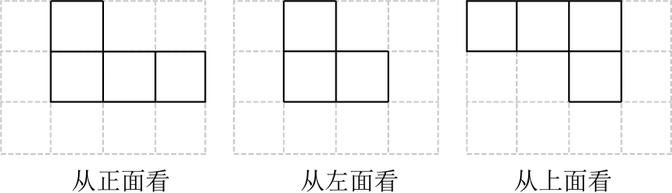
（2）由图可知：去掉①或③时，从左面看的形状都会发生改变，去掉②时，形状不变，
故答案为：②．
22．（10分）（24-25七年级上·河南郑州·期中）【问题情境】某综合实践小组计划进行废物再利用的环保小卫士活动．他们准备用废弃的宣传单制作成装垃圾的无盖纸盒．
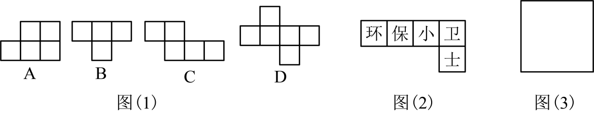
【操作探究】
(1)若准备制作一个无盖的正方体纸盒，如图(1)，图形 经过折叠能围成一个无盖正方体纸盒．(填A，B，C，或D)
(2)如图(2)是小明的设计图，把它折成一个无盖正方体纸盒后与“保”字所在面相对的面上的文字是 ．
(3)如图(3)，有一张边长为20cm的正方形废弃宣传单，小华将其四个角各剪去一个边长为4cm小正方形后，折成无盖长方体纸盒．求这个无盖长方体纸盒的底面积和容积．
【答案】(1)C
(2)卫
(3)这个无盖长方体纸盒的底面积为144 cm2，容积为576 cm3
【分析】本题主要考查了正方体的展开和折叠，
对于（1），根据正方体的折叠逐项判断；
对于（2），将正方体折叠可得各面相对的字，进而得出答案；
对于（3），画出示意图，再根据面积和体积计算公式计算即可．
【详解】（1）要围成一个无盖正方体纸盒，说明展开图有5个面，选项A不能制作成无盖正方体纸盒；选项B有4个面，不符合题意；选项D有6个面，不符合题意，只有选项C中的图形符合题意．
故选：C．
（2）将正方体折叠可知“小”字对“环”字，“保”字与“卫”字．
故答案为：卫；
（3）正方形四个角各剪去一个小正方形后，如图所示．
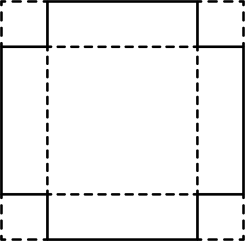
因为剪去的小正方形的边长为4cm，
所以无盖长方体纸盒的底面积为(20−2×4)×(20−2×4)=144(cm2)，容积为4×144=576(cm3)．
答：这个无盖长方体纸盒的底面积为144 cm2，容积为576 cm3．
23．（12分）（24-25七年级上·山东淄博·期中）（1）如图所示的六棱柱中，它的底面边长都是4cm，侧棱长为8cm，这个棱柱共有多少个面？这个棱柱共有多少个顶点？有多少条棱？它的侧面积是多少？

（2）如图，有一个长6cm，宽4cm的长方形纸板，现要求以其一组对边中点所在直线为轴旋转180°，可按两种方案进行操作．

方案一：以较长的一组对边中点所在直线为轴旋转，如图（1）；
方案二：以较短的一组对边中点所在直线为轴旋转，如图（2）．
①上述操作能形成的几何体是__________，说明的事实是____________________；
②请通过计算说明哪种方案得到的几何体的体积大．
【答案】（1）这个棱柱共有8个面，有 12 个顶点，有18条棱；侧面积为192cm2；（2）①圆柱，面动成体；②方案一得到的圆柱的体积大
【分析】本题考查基本图形旋转得到的体积及棱柱、圆柱体积计算；
（1）根据棱柱特征直接解答即可；
（2）①根据面动成体解答即可；②先求出所得几何体体积再比较大小即可．
【详解】解：（1）①这个棱柱共有8个面，
有 12 个顶点，
有18条棱；
②它的侧面积为4×8×6=192cm2 ；
（2）①长方形旋转可以得到圆柱，上述操作能形成的几何体是圆柱，
说明的事实是：面动成体，
②方案一：π×32×4=36πcm3，
方案二：π×22×6=24πcm3，
∵36π>24π，
∴方案一得到的圆柱的体积大．
24．（12分）（24-25七年级上·山西晋城·期末）综合与实践
新年晚会是我们最欢乐的时候，会场上，悬挂着五彩缤纷的小装饰，其中有各种各样的立体图形．下面是常见的一些多面体：

操作探究：
(1)通过数上面图形中每个多面体的顶点数（V）、面数（F）和棱数（E），填写下表中空缺的部分：
多面体 | 顶点数（V） | 面数（F） | 棱数（E） |
四面体 | 4 | ||
六面体 | 8 | 6 | |
八面体 | 8 | 12 | |
十二面体 | 20 | 30 |
通过填表发现：顶点数（V）、面数（F）和棱数（E）之间的数量关系是 ，这就是伟大的数学家欧拉（L.Euler，1707—1783）证明的这一个关系式．我们把它称为欧拉公式；
探究应用：
(2)已知一个棱柱只有七个面，则这个棱柱是 棱柱；
(3)已知一个多面体只有8个顶点，并且过每个顶点都有3条棱，求这个多面体的面数．
【答案】(1)表见解析，V+F−E=2
(2)五
(3)6
【分析】（1）通过观察，发现棱数=顶点数+面数−2；
（2）根据棱柱的定义进行解答即可；
（3）由（1）得出的规律进行解答即可．
【详解】（1）解：填表如下：
多面体 | 顶点数（V） | 面数（F） | 棱数（E） |
四面体 | 4 | 4 | 6 |
六面体 | 8 | 6 | 12 |
八面体 | 6 | 8 | 12 |
十二面体 | 20 | 12 | 30 |
顶点数（V）、面数（F）和棱数（E）之间的数量关系是V+F−E=2，
故答案为：V+F−E=2；
（2）解：∵一个棱柱只有七个面，必有2个底面，
∴有7−2=5个侧面，
∴这个棱柱是五棱柱，
故答案为：五；
（3）解：由题意得：棱的总条数为8×32=12（条），
由V+F−E=2可得8+F−12=2,
解得：F=6，
故该多面体的面数为6．
【点睛】本题考查了多面体与棱柱的认识，点线面体的相关概念，正确看出图形中各量之间的关系是解题的关键．